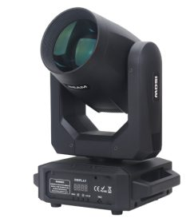

If you run a house of worship, a 200-capacity club, a bar with a dance floor, or a mobile DJ rig, the fixture catalogue can feel like it was written for arenas. Fixtures with 20-degree zooms, 400W discharge lamps and 30-kilogram bodies belong in big rooms. The good news: over the last few years the compact end of the moving head market has become genuinely capable, and factory pricing on small fixtures has come down to the point where a serious small-venue rig costs less than a single mid-range amplifier used to.
This guide is about choosing those compact fixtures correctly. We sell moving head lights from our own factory in Guangzhou, so every model and price in this article is real catalogue data — and where the numbers matter for a small room, we will show them.
Start with the room, not the fixture
Three measurements decide most of your purchase before you look at a single product page.
Ceiling height and mounting position. Moving heads produce their best effect when they have distance to work with. A beam needs throw to read as a shaft; a wash needs throw to blend. In a room with a 3-metre ceiling you will typically mount fixtures on a truss at 2.6–2.8 m, on wall brackets at the sides of the stage, or on floor stands behind the DJ booth. Measure the distance from the mounting point to the centre of the dance floor — that number is your throw distance, and it drives everything else.
Throw distance under 4 m: short-throw fixtures and wash bars win. Long-throw beams will still work as aerial effects pointing across the room rather than down at it.
Throw distance over 5 m: compact beams become viable and start to look dramatic, because the shaft has length. This is where a fixture like the RG-ML150BR-KNNW1H13 — a mini 150W beam moving head at US$96 EXW — earns its keep in dark rooms.
Power available. Nearly every LED moving head we ship runs on AC100–240V, 50/60 Hz, so a normal mains circuit is fine. The real constraint is circuit capacity if you daisy-chain many fixtures on one drop; a rig of ten 150–230W heads draws less than a kettle, but plan your power distribution before the install, not during the sound check.
Where the fixtures live between events. For mobile DJs, weight and case volume matter more than lumens. An 8-head beam bar such as the RG-ML80B-KCRe8AH38 is a single 1.1-metre unit — one case, one stand, eight moving beams, US$134 EXW with a one-piece minimum order. Compare that with packing eight individual heads, clamps and safety cables every weekend.
Beam, wash or hybrid?
Small rooms punish the wrong fixture type more than big rooms do. Here is the honest breakdown.
| Fixture type | Best job in a small venue | Weakness | Compact example |
|---|---|---|---|
| Beam | Aerial shafts across the room, energy and movement | Blinds people at close range; poor at lighting faces | RG-ML150BR-KNNW1H13, US$96 |
| Wash | Colour on the dance floor, walls, performers | Less drama; needs more units to look rich | RG-ML300B-KCRe5AH105 (5×60W RGBW zoom), US$386 |
| Hybrid / spot-wash-beam | One fixture doing two jobs when the budget allows | Heavier and pricier than a dedicated unit | RG-ML150BD-KEE1H16, US$315 |
| Beam + laser combo | Instant atmosphere with zero haze discipline | Fixed look; less flexible than separates | RG-ML100BD-KC6AH40, US$219 |
A rule of thumb that has survived hundreds of small installs: beams for the air, washes for the people. If your crowd faces a stage, wash the stage and hit the room with beams. If the room is the show — a club, a bar — spend more of the budget on beams and atmospheric colour and less on lighting anyone's face.
The hybrid question comes up constantly. A fixture like the RG-ML150BD-KEE1H16 pairs a 150W beam engine with a 200W wash source, a colour wheel with fine tuning and rotating gobos, at US$315. For a venue that can only hang eight fixtures total, hybrids double the visual vocabulary per rigging point. For a mobile rig where everything comes down after every show, two dedicated lightweight fixtures are usually easier on the back than one heavier hybrid.
The zoom question
Zoom range matters more in small rooms than spec sheets suggest. A fixed 5-degree beam is a laser line — beautiful in haze, useless for covering a dance floor. A zoom wash lets one fixture do front light from a short throw tonight and backlight from the back wall tomorrow.
The RG-ML300B-KCRe5AH105 is the fixture we end up recommending most for this: five 60W RGBW LEDs, pixel-controllable, with zoom, in a compact hybrid body at US$386 EXW. It washes a stage from three metres, pixel-fires across the truss as an effect, and still cuts through as a beam when the room drops into haze. If your venue hosts everything from weddings to rock nights, that flexibility is the product.
What actually breaks compact fixtures
Small moving heads fail in predictable ways, and none of them are mysterious:
- Cheap moving-head yokes and gears on no-name fixtures. Buy from a factory that publishes spare-parts policy — ask what the replacement yoke and motor cost before you buy, not after.
- Overheating in tight installs. Compact heads pack a lot of LED into a small shell. Give them ventilation room; do not bury them in foam-lined cases while running.
- Connector wear on mobile rigs. XLR and powerCON-style connectors are consumables. A splash-proof DMX splitter in the rig protects the console's output port from the wear — the RG-CA8402MINI at US$51 is a 1-in-4-out isolated splitter the size of a paperback.
- Firmware and addressing confusion. Not a hardware failure, but it produces "broken fixture" service calls that are really patch errors. We cover this in DMX addressing for rental houses.
Three worked packages
All prices are EXW Guangzhou factory pricing from our current catalogue. Volume tiers bring them lower — most models drop 5–10% at 50–100 pieces, which is why venues often co-order with a nearby venue or through an installer.
Package A — the mobile starter (US$470). Two RG-ML80B-KCRe8AH38 8-head beam bars (2 × US$134) plus one RG-CA8402MINI splitter (US$51) plus one RG-MINI1024 console (US$300) if you do not own a controller yet. Sixteen moving beams, one case per bar, sets up in twenty minutes.
Package B — the installed club look (US$1,223). Four RG-ML150BR-KNNW1H13 mini beams over the dance floor (4 × US$96), two RG-ML100BD-KC6AH40 beam-plus-laser units behind the booth (2 × US$219), two RG-ML300B-KCRe5AH105 zoom washes on the stage sides (2 × US$386). Eight rigging points, four beam clusters, a laser accent, and real stage wash.
Package C — the house of worship (US$1,040). Worship spaces need people lit softly and walls lit warmly, with zero distraction during services. Two RG-ML300B-KCRe5AH105 zoom washes on the front truss for the platform (2 × US$386) plus two RG-ML80B-KCRe8AH38 beam bars flown high for events and youth nights (2 × US$134). The point of the package: one quiet, flexible rig that does Sunday and Saturday equally well, from four rigging points.
The single most expensive mistake small venues make is buying one "hero" fixture instead of a matched set. Six identical heads programmed together always outperform four different ones fighting for attention.
Buy once, spec correctly
A closing checklist before you order anything:
- Measure throw distance from every mounting position you actually have.
- Count rigging points and check their load rating — a 12 kg head on a 10 kg-rated clamp is an incident waiting for a date.
- Decide console-first. If your controller cannot patch 96 fixtures or lacks a fixture library, upgrade the console before the heads. The RG-MINI1024 handles 96 fixtures over 1,024 channels with the Avolites Pearl R20 library at US$300.
- Ask for the spares list. Any factory that cannot tell you the price of a replacement yoke, motor or mainboard is not a factory you want a warranty conversation with.
- Confirm the voltage matches your mains, and order the correct plug type for your country — it is a five-second question at order time and a two-week delay after delivery.
If you send us your room dimensions, mounting heights and budget, we will return a fixture list with exact models, quantities and EXW pricing — free, no obligation. That is the RFQ form, and it exists precisely so small venues do not have to guess.
Frequently Asked Questions
How many moving heads does a small venue actually need?
Four to eight heads cover most rooms under 300 square metres — four for colour and movement over a dance floor, eight if you also want to hit the walls and audience areas.
What is the minimum ceiling height for moving heads?
Around 2.8 metres is workable if the fixtures are truss- or wall-mounted with a short throw; below that, compact beams and wash bars mounted tight to the ceiling are the safer choice.
Are mini 150W moving heads bright enough for a club?
A 150W beam fixture such as the RG-ML150BR-KNNW1H13 is enough for atmospheric shafts and mid-air effects in a dark room; for lighting people on stage or a dance floor you want wash fixtures of 60W LEDs and up.
Can I run moving heads without a lighting console?
Yes. Most compact heads support sound-active and built-in program modes, and a small DMX console such as the RG-MINI1024 costs less than one rented show.
Need help choosing fixtures for your project? Tell us the venue type and room size — we'll spec it for free.
Request a Free Rig Spec →